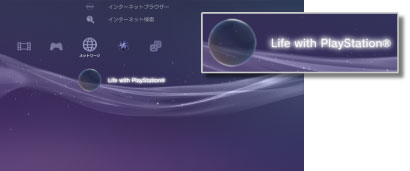

ネットワーク > Life with PlayStation®について
Life with PlayStation®について
Life with PlayStation®は、［時間］と［場所］をキーワードにインターネット上のコンテンンツを表現するアプリケーションです。チャンネルを選んでさまざまなコンテンツを楽しめます。
Life with PlayStation®を起動中は、Folding@home™プロジェクトに自動的に参加します。Folding@home™は、米国スタンフォード大学が推進する分散コンピューティング・プロジェクトです。
Life with PlayStation®を起動する
Life with PlayStation®を使うには、はじめにプログラムのダウンロードとインストールが必要です。 （ネットワーク）から
（ネットワーク）から （Life with PlayStation®）を選ぶと、インターネットからプログラムをダウンロードできます。画面の指示に従って操作してください。
（Life with PlayStation®）を選ぶと、インターネットからプログラムをダウンロードできます。画面の指示に従って操作してください。

ヒント
- Life with PlayStation®を起動するには、PS3™のハードディスクに500MB以上の空き容量が必要です。
 （Folding@home™）のアイコンが表示されているときは、Folding@home™をアップデートしたあとに、Life with PlayStation®へのアップデートが必要です。（ネットワーク）から（Folding@home™）を選び、画面の指示に従ってFolding@home™をアップデートしてください。アップデート後、もう1度（ネットワーク）から（Folding@home™）を選び、画面の指示に従ってLife with PlayStation®にアップデートしてください。
（Folding@home™）のアイコンが表示されているときは、Folding@home™をアップデートしたあとに、Life with PlayStation®へのアップデートが必要です。（ネットワーク）から（Folding@home™）を選び、画面の指示に従ってFolding@home™をアップデートしてください。アップデート後、もう1度（ネットワーク）から（Folding@home™）を選び、画面の指示に従ってLife with PlayStation®にアップデートしてください。
Life with PlayStation®を終了する
Life with PlayStation®を起動中に、ワイヤレスコントローラのPSボタンを押し、（ネットワーク）から （終了する）を選びます。
（終了する）を選びます。
自動起動を設定する
一定時間PS3™を操作しなかったときに、自動的にLife with PlayStation®を起動します。（ネットワーク）から（Life with PlayStation®）を選んで ボタンを押し、オプションメニューで［自動起動］を選びます。
ボタンを押し、オプションメニューで［自動起動］を選びます。
| 切 | Life with PlayStation®を自動起動しない |
|---|---|
| 10分後 | 10分後にLife with PlayStation®を起動する |
| 20分後 | 20分後にLife with PlayStation®を起動する |
| 30分後 | 30分後にLife with PlayStation®を起動する |
ヒント
PS3™をインターネットに接続していないときは、自動起動は無効になります。
Life with PlayStation®を削除する
Life with PlayStation®のプログラムをハードディスクから削除します。（ネットワーク）から（Life with PlayStation®）を選んでボタンを押し、オプションメニューで［削除］を選びます。
ヒント
プログラムを削除しても、（Life with PlayStation®）のアイコンはXMB™からは削除されません。アイコンを選ぶと、もう1度Life with PlayStation®のプログラムをダウンロードします。